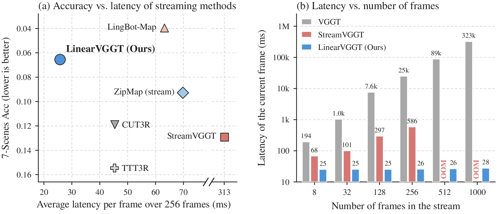
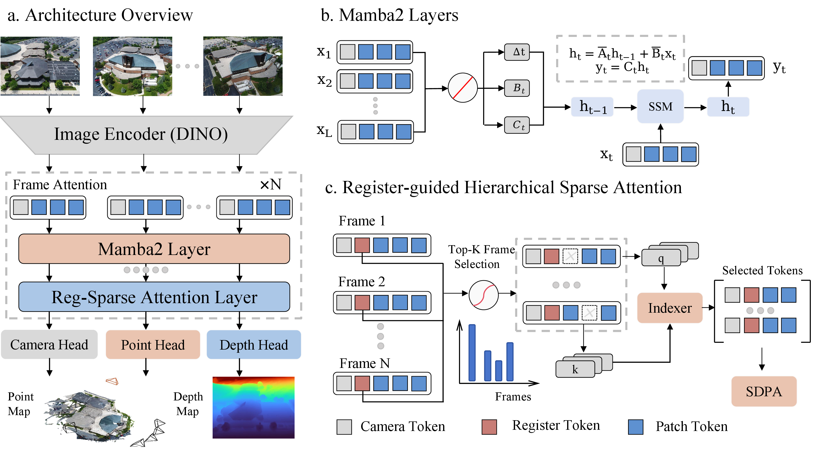
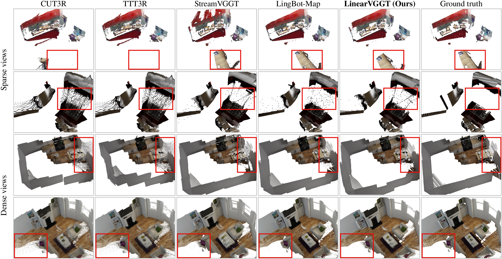
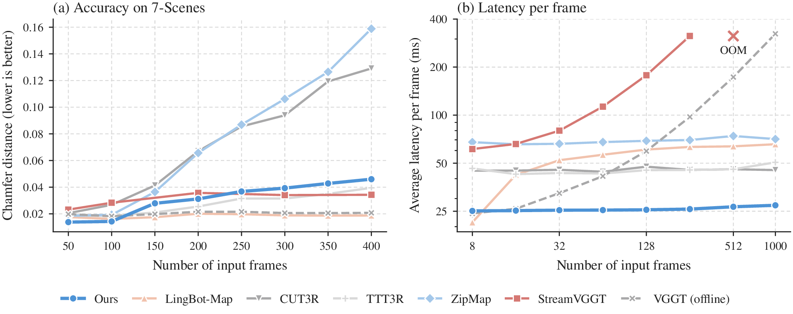

The three methods receive the same frames at the same time, and each method shows a frame when it has finished that frame. The clock uses the latency that we measured for each frame of each method on these streams, on one RTX PRO 6000 Blackwell GPU with 518×392 frames: one second of the video is one second of processing. In the interactive viewer, same frame shows the same frame in the three views, for a comparison of the geometry.
Abstract
Transformer-based 3D reconstruction models such as VGGT and π³ predict cameras, depth and point maps directly from many input views. Causal attention models such as StreamVGGT extend them to online video but cache all past tokens, so their total compute grows quadratically with the stream length. Recurrent models such as CUT3R and TTT3R keep a fixed-size state at constant cost, but they progressively forget early geometry.
We present LinearVGGT, a hybrid model distilled from StreamVGGT, which uses Mamba2 layers for efficient sequence modeling in three of every four global layers. The remaining layers use register-guided sparse attention to retrieve a few relevant past frames, compensating for the limited exact long-range recall of Mamba2. Our distillation needs only 9% of the GPU hours and 31% of the training frames that StreamVGGT uses to learn from VGGT.
LinearVGGT keeps an almost constant latency of 27 ms per frame over 1,024 frames and is on average 12 times faster than StreamVGGT. It outperforms its teacher and is competitive with the state-of-the-art streaming model LingBot-Map, while running 2.5× faster and using 2.7× less memory.

Method
LinearVGGT keeps the image encoder, the frame attention layers and the prediction heads of StreamVGGT and changes only the layers that connect frames.
Mamba2 layers
Three of every four global layers carry the past in a state of fixed size. A frame costs the same at each position of the stream, and the memory of these layers does not grow.
Register-guided hierarchical sparse attention
Every fourth layer reads the first frame as a fixed anchor and the few past frames that its register tokens select. A token indexer keeps only a subset of the patch tokens of each cached frame.
Three-stage distillation
Stage 1 aligns the mixing matrices with the attention matrices of the teacher. Stage 2 aligns the layer outputs. Stage 3 trains end to end with ground truth and a distillation term.

3D reconstruction
| Method | Mode | 7-Scenes | NRGBD | FPS | ||||
|---|---|---|---|---|---|---|---|---|
| Acc | Comp | NC | Acc | Comp | NC | |||
| VGGT | Offline | 0.088 | 0.091 | 0.786 | 0.079 | 0.083 | 0.908 | 10.3 |
| π³ | Offline | 0.123 | 0.115 | 0.783 | 0.028 | 0.030 | 0.910 | 14.1 |
| FastVGGT | Offline | 0.091 | 0.087 | 0.738 | 0.101 | 0.100 | 0.859 | 23.7 |
| GoToHunt | Offline | 0.075 | 0.070 | 0.757 | 0.060 | 0.069 | 0.893 | 20.4 |
| StreamVGGT (teacher) | Online | 0.129 | 0.115 | 0.751 | 0.084 | 0.079 | 0.861 | 3.2 |
| OVGGT | Online | 0.128 | 0.114 | 0.752 | 0.084 | 0.079 | 0.862 | 10.3 |
| CUT3R | Online | 0.119 | 0.120 | 0.722 | 0.094 | 0.073 | 0.836 | 22.0 |
| TTT3R | Online | 0.155 | 0.194 | 0.715 | 0.101 | 0.076 | 0.838 | 22.1 |
| ZipMap | Online | 0.093 | 0.107 | 0.742 | 0.217 | 0.212 | 0.809 | 14.3 |
| LingBot-Map | Online | 0.040 | 0.061 | 0.768 | 0.039 | 0.045 | 0.893 | 15.8 |
| LinearVGGT (ours) | Online | 0.066 | 0.073 | 0.748 | 0.078 | 0.067 | 0.859 | 38.8 |


Video depth
| Method | Mode | Sintel | Bonn | KITTI | |||
|---|---|---|---|---|---|---|---|
| AbsRel | δ<1.25 | AbsRel | δ<1.25 | AbsRel | δ<1.25 | ||
| VGGT | Offline | 0.298 | 0.682 | 0.057 | 0.968 | 0.061 | 0.970 |
| π³ | Offline | 0.248 | 0.679 | 0.049 | 0.975 | 0.037 | 0.986 |
| StreamVGGT (teacher) | Online | 0.323 | 0.658 | 0.059 | 0.972 | 0.173 | 0.721 |
| OVGGT | Online | 0.330 | 0.634 | 0.058 | 0.971 | 0.127 | 0.839 |
| CUT3R | Online | 0.459 | 0.476 | 0.072 | 0.950 | 0.141 | 0.829 |
| TTT3R | Online | 0.432 | 0.497 | 0.063 | 0.969 | 0.136 | 0.851 |
| ZipMap | Online | 0.292 | 0.606 | 0.077 | 0.955 | 0.096 | 0.920 |
| LingBot-Map | Online | 0.318 | 0.658 | 0.059 | 0.960 | 0.070 | 0.962 |
| LinearVGGT (ours) | Online | 0.317 | 0.647 | 0.052 | 0.969 | 0.093 | 0.947 |
BibTeX
@article{kang2026linearvggt,
title = {Linear-time Online Visual Geometry Transformer
with Hybrid Architecture},
author = {Kang, Haoyu and Li, Pingzhi and Zhang, Ruichen and Chen, Tianlong},
journal = {arXiv preprint arXiv:2611.33650},
year = {2026}
}